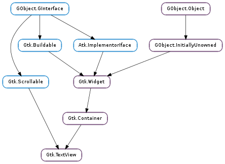

| Subclasses: | GtkSource.View |
|---|
| Name | Type | Flags | Description |
|---|---|---|---|
| accepts-tab | bool | r/w | Whether Tab will result in a tab character being entered |
| buffer | Gtk.TextBuffer | r/w | The buffer which is displayed |
| cursor-visible | bool | r/w | If the insertion cursor is shown |
| editable | bool | r/w | Whether the text can be modified by the user |
| im-module | str | r/w | Which IM module should be used |
| indent | int | r/w | Amount to indent the paragraph, in pixels |
| input-hints | Gtk.InputHints | r/w | Hints for the text field behaviour |
| input-purpose | Gtk.InputPurpose | r/w | Purpose of the text field |
| justification | Gtk.Justification | r/w | Left, right, or center justification |
| left-margin | int | r/w | Width of the left margin in pixels |
| overwrite | bool | r/w | Whether entered text overwrites existing contents |
| pixels-above-lines | int | r/w | Pixels of blank space above paragraphs |
| pixels-below-lines | int | r/w | Pixels of blank space below paragraphs |
| pixels-inside-wrap | int | r/w | Pixels of blank space between wrapped lines in a paragraph |
| populate-all | bool | r/w | Whether to emit ::populate-popup for touch popups |
| right-margin | int | r/w | Width of the right margin in pixels |
| tabs | Pango.TabArray | r/w | Custom tabs for this text |
| wrap-mode | Gtk.WrapMode | r/w | Whether to wrap lines never, at word boundaries, or at character boundaries |
| Name | Parameters | Return | Description |
|---|---|---|---|
| backspace | The ::backspace signal is a keybinding signal which gets emitted when the user asks for it. The default bindings for this signal are Backspace and Shift-Backspace. | ||
| copy-clipboard | The ::copy-clipboard signal is a keybinding signal which gets emitted to copy the selection to the clipboard. The default bindings for this signal are Ctrl-c and Ctrl-Insert. | ||
| cut-clipboard | The ::cut-clipboard signal is a keybinding signal which gets emitted to cut the selection to the clipboard. The default bindings for this signal are Ctrl-x and Shift-Delete. | ||
| delete-from-cursor | Gtk.DeleteType, int | The ::delete-from-cursor signal is a keybinding signal which gets emitted when the user initiates a text deletion. If the type is Gtk.DeleteType.CHARS, GTK+ deletes the selection if there is one, otherwise it deletes the requested number of characters. The default bindings for this signal are Delete for deleting a character, Ctrl-Delete for deleting a word and Ctrl-Backspace for deleting a word backwords. | |
| insert-at-cursor | str | The ::insert-at-cursor signal is a keybinding signal which gets emitted when the user initiates the insertion of a fixed string at the cursor. This signal has no default bindings. | |
| move-cursor | Gtk.MovementStep, int, bool | The ::move-cursor signal is a keybinding signal which gets emitted when the user initiates a cursor movement. If the cursor is not visible in text_view, this signal causes the viewport to be moved instead. Applications should not connect to it, but may emit it with GObject.signal_emit_by_name () if they need to control the cursor programmatically. The default bindings for this signal come in two variants, the variant with the Shift modifier extends the selection, the variant without the Shift modifer does not. There are too many key combinations to list them all here. * Arrow keys move by individual characters/lines * Ctrl-arrow key combinations move by words/paragraphs * Home/End keys move to the ends of the buffer * PageUp/PageDown keys move vertically by pages * Ctrl-PageUp/PageDown keys move horizontally by pages | |
| move-viewport | Gtk.ScrollStep, int | The ::move-viewport signal is a keybinding signal which can be bound to key combinations to allow the user to move the viewport, i.e. change what part of the text view is visible in a containing scrolled window. There are no default bindings for this signal. | |
| paste-clipboard | The ::paste-clipboard signal is a keybinding signal which gets emitted to paste the contents of the clipboard into the text view. The default bindings for this signal are Ctrl-v and Shift-Insert. | ||
| populate-popup | Gtk.Widget | The ::populate-popup signal gets emitted before showing the context menu of the text view. If you need to add items to the context menu, connect to this signal and append your items to the popup, which will be a Gtk.Menu in this case. If Gtk.TextView :populate-all is True, this signal will also be emitted to populate touch popups. In this case, popup will be a different container, e.g. a Gtk.Toolbar. The signal handler should not make assumptions about the type of widget, but check whether popup is a Gtk.Menu or Gtk.Toolbar or another kind of container. | |
| preedit-changed | str | If an input method is used, the typed text will not immediately be committed to the buffer. So if you are interested in the text, connect to this signal. This signal is only emitted if the text at the given position is actually editable. | |
| select-all | bool | The ::select-all signal is a keybinding signal which gets emitted to select or unselect the complete contents of the text view. The default bindings for this signal are Ctrl-a and Ctrl-/ for selecting and Shift-Ctrl-a and Ctrl-\ for unselecting. | |
| set-anchor | The ::set-anchor signal is a keybinding signal which gets emitted when the user initiates setting the “anchor” mark. The “anchor” mark gets placed at the same position as the “insert” mark. This signal has no default bindings. | ||
| toggle-cursor-visible | The ::toggle-cursor-visible signal is a keybinding signal which gets emitted to toggle the visibility of the cursor. The default binding for this signal is F7. | ||
| toggle-overwrite | The ::toggle-overwrite signal is a keybinding signal which gets emitted to toggle the overwrite mode of the text view. The default bindings for this signal is Insert. |
| Name | Type | Access |
|---|---|---|
| parent_instance | Gtk.Container | r |
Bases: Gtk.Container, Gtk.Scrollable
You may wish to begin by reading the text widget conceptual overview which gives an overview of all the objects and data types related to the text widget and how they work together.
| Returns: | a new Gtk.TextView |
|---|---|
| Return type: | Gtk.Widget |
Creates a new Gtk.TextView. If you don’t call Gtk.TextView.set_buffer () before using the text view, an empty default buffer will be created for you. Get the buffer with Gtk.TextView.get_buffer (). If you want to specify your own buffer, consider Gtk.TextView.new_with_buffer ().
| Parameters: | buffer (Gtk.TextBuffer) – a Gtk.TextBuffer |
|---|---|
| Returns: | a new Gtk.TextView. |
| Return type: | Gtk.Widget |
Creates a new Gtk.TextView widget displaying the buffer buffer. One buffer can be shared among many widgets. buffer may be None to create a default buffer, in which case this function is equivalent to Gtk.TextView.new (). The text view adds its own reference count to the buffer; it does not take over an existing reference.
| Parameters: |
|
|---|
Adds a child widget in the text buffer, at the given anchor.
| Parameters: |
|
|---|
Adds a child at fixed coordinates in one of the text widget’s windows.
The window must have nonzero size (see Gtk.TextView.set_border_window_size ()). Note that the child coordinates are given relative to the Gdk.Window in question, and that these coordinates have no sane relationship to scrolling. When placing a child in Gtk.TextWindowType.WIDGET, scrolling is irrelevant, the child floats above all scrollable areas. But when placing a child in one of the scrollable windows (border windows or text window), you’ll need to compute the child’s correct position in buffer coordinates any time scrolling occurs or buffer changes occur, and then call Gtk.TextView.move_child () to update the child’s position.
| Parameters: | iter (Gtk.TextIter) – a Gtk.TextIter |
|---|---|
| Returns: | True if iter was moved and is not on the end iterator |
| Return type: | bool |
Moves the given iter backward by one display (wrapped) line. A display line is different from a paragraph. Paragraphs are separated by newlines or other paragraph separator characters. xlib.Display lines are created by line-wrapping a paragraph. If wrapping is turned off, display lines and paragraphs will be the same. xlib.Display lines are divided differently for each view, since they depend on the view’s width; paragraphs are the same in all views, since they depend on the contents of the Gtk.TextBuffer.
| Parameters: | iter (Gtk.TextIter) – a Gtk.TextIter |
|---|---|
| Returns: | True if iter was moved and is not on the end iterator |
| Return type: | bool |
Moves the given iter backward to the next display line start. A display line is different from a paragraph. Paragraphs are separated by newlines or other paragraph separator characters. xlib.Display lines are created by line-wrapping a paragraph. If wrapping is turned off, display lines and paragraphs will be the same. xlib.Display lines are divided differently for each view, since they depend on the view’s width; paragraphs are the same in all views, since they depend on the contents of the Gtk.TextBuffer.
| Parameters: |
|
|---|---|
| Return type: |
Converts coordinate (buffer_x, buffer_y ) to coordinates for the window win, and stores the result in (window_x, window_y ).
Note that you can’t convert coordinates for a nonexisting window (see Gtk.TextView.set_border_window_size ()).
| Parameters: | iter (Gtk.TextIter) – a Gtk.TextIter |
|---|---|
| Returns: | True if iter was moved and is not on the end iterator |
| Return type: | bool |
Moves the given iter forward by one display (wrapped) line. A display line is different from a paragraph. Paragraphs are separated by newlines or other paragraph separator characters. xlib.Display lines are created by line-wrapping a paragraph. If wrapping is turned off, display lines and paragraphs will be the same. xlib.Display lines are divided differently for each view, since they depend on the view’s width; paragraphs are the same in all views, since they depend on the contents of the Gtk.TextBuffer.
| Parameters: | iter (Gtk.TextIter) – a Gtk.TextIter |
|---|---|
| Returns: | True if iter was moved and is not on the end iterator |
| Return type: | bool |
Moves the given iter forward to the next display line end. A display line is different from a paragraph. Paragraphs are separated by newlines or other paragraph separator characters. xlib.Display lines are created by line-wrapping a paragraph. If wrapping is turned off, display lines and paragraphs will be the same. xlib.Display lines are divided differently for each view, since they depend on the view’s width; paragraphs are the same in all views, since they depend on the contents of the Gtk.TextBuffer.
| Returns: | True if pressing the Tab key inserts a tab character, False if pressing the Tab key moves the keyboard focus. |
|---|---|
| Return type: | bool |
Returns whether pressing the Tab key inserts a tab characters. Gtk.TextView.set_accepts_tab ().
| Parameters: | type (Gtk.TextWindowType) – window to return size from |
|---|---|
| Returns: | width of window |
| Return type: | int |
Gets the width of the specified border window. See Gtk.TextView.set_border_window_size ().
| Returns: | a Gtk.TextBuffer |
|---|---|
| Return type: | Gtk.TextBuffer |
Returns the Gtk.TextBuffer being displayed by this text view. The reference count on the buffer is not incremented; the caller of this function won’t own a new reference.
| Parameters: | iter (Gtk.TextIter or None) – a Gtk.TextIter |
|---|---|
| Return type: | strong: cairo.RectangleInt, weak: cairo.RectangleInt |
Given an iter within a text layout, determine the positions of the strong and weak cursors if the insertion point is at that iterator. The position of each cursor is stored as a zero-width rectangle. The strong cursor location is the location where characters of the directionality equal to the base direction of the paragraph are inserted. The weak cursor location is the location where characters of the directionality opposite to the base direction of the paragraph are inserted.
If iter is None, the actual cursor position is used.
Note that if iter happens to be the actual cursor position, and there is currently an IM preedit sequence being entered, the returned locations will be adjusted to account for the preedit cursor’s offset within the preedit sequence.
The rectangle position is in buffer coordinates; use Gtk.TextView.buffer_to_window_coords () to convert these coordinates to coordinates for one of the windows in the text view.
| Returns: | whether the insertion mark is visible |
|---|---|
| Return type: | bool |
Find out whether the cursor is being displayed.
| Returns: | a new Gtk.TextAttributes |
|---|---|
| Return type: | Gtk.TextAttributes |
Obtains a copy of the default text attributes. These are the attributes used for text unless a tag overrides them. You’d typically pass the default attributes in to Gtk.TextIter.get_attributes () in order to get the attributes in effect at a given text position.
The return value is a copy owned by the caller of this function, and should be freed.
| Returns: | whether text is editable by default |
|---|---|
| Return type: | bool |
Returns the default editability of the Gtk.TextView. Tags in the buffer may override this setting for some ranges of text.
| Returns: | pointer to the horizontal Gtk.Adjustment |
|---|---|
| Return type: | Gtk.Adjustment |
Gets the horizontal-scrolling Gtk.Adjustment.
| Returns: | number of pixels of indentation |
|---|---|
| Return type: | int |
Gets the default indentation of paragraphs in text_view. Tags in the view’s buffer may override the default. The indentation may be negative.
| Return type: | Gtk.InputHints |
|---|
Gets the value of the Gtk.TextView :input-hints property.
| Return type: | Gtk.InputPurpose |
|---|
Gets the value of the Gtk.TextView :input-purpose property.
| Parameters: | |
|---|---|
| Return type: | iter: Gtk.TextIter |
Retrieves the iterator at buffer coordinates x and y. Buffer coordinates are coordinates for the entire buffer, not just the currently-displayed portion. If you have coordinates from an event, you have to convert those to buffer coordinates with Gtk.TextView.window_to_buffer_coords ().
| Parameters: | |
|---|---|
| Return type: | iter: Gtk.TextIter, trailing: int |
Retrieves the iterator pointing to the character at buffer coordinates x and y. Buffer coordinates are coordinates for the entire buffer, not just the currently-displayed portion. If you have coordinates from an event, you have to convert those to buffer coordinates with Gtk.TextView.window_to_buffer_coords ().
Note that this is different from Gtk.TextView.get_iter_at_location (), which returns cursor locations, i.e. positions between characters.
| Parameters: | iter (Gtk.TextIter) – a Gtk.TextIter |
|---|---|
| Return type: | location: cairo.RectangleInt |
Gets a rectangle which roughly contains the character at iter. The rectangle position is in buffer coordinates; use Gtk.TextView.buffer_to_window_coords () to convert these coordinates to coordinates for one of the windows in the text view.
| Returns: | default justification |
|---|---|
| Return type: | Gtk.Justification |
Gets the default justification of paragraphs in text_view. Tags in the buffer may override the default.
| Returns: | left margin in pixels |
|---|---|
| Return type: | int |
Gets the default left margin size of paragraphs in the text_view. Tags in the buffer may override the default.
| Parameters: | y (int) – a y coordinate |
|---|---|
| Return type: | target_iter: Gtk.TextIter, line_top: int |
Gets the Gtk.TextIter at the start of the line containing the coordinate y. y is in buffer coordinates, convert from window coordinates with Gtk.TextView.window_to_buffer_coords (). If non-None, line_top will be filled with the coordinate of the top edge of the line.
| Parameters: | iter (Gtk.TextIter) – a Gtk.TextIter |
|---|---|
| Return type: | y: int, height: int |
Gets the y coordinate of the top of the line containing iter, and the height of the line. The coordinate is a buffer coordinate; convert to window coordinates with Gtk.TextView.buffer_to_window_coords ().
| Returns: | whether text_view is in overwrite mode or not. |
|---|---|
| Return type: | bool |
Returns whether the Gtk.TextView is in overwrite mode or not.
| Returns: | default number of pixels above paragraphs |
|---|---|
| Return type: | int |
Gets the default number of pixels to put above paragraphs.
| Returns: | default number of blank pixels below paragraphs |
|---|---|
| Return type: | int |
Gets the value set by Gtk.TextView.set_pixels_below_lines ().
| Returns: | default number of pixels of blank space between wrapped lines |
|---|---|
| Return type: | int |
Gets the value set by Gtk.TextView.set_pixels_inside_wrap ().
| Returns: | right margin in pixels |
|---|---|
| Return type: | int |
Gets the default right margin for text in text_view. Tags in the buffer may override the default.
| Returns: | copy of default tab array, or None if “standard” tabs are used; must be freed with Pango.TabArray.free (). |
|---|---|
| Return type: | Pango.TabArray |
Gets the default tabs for text_view. Tags in the buffer may override the defaults. The returned array will be None if “standard” (8-space) tabs are used. Free the return value with Pango.TabArray.free ().
| Returns: | pointer to the vertical Gtk.Adjustment |
|---|---|
| Return type: | Gtk.Adjustment |
Gets the vertical-scrolling Gtk.Adjustment.
| Return type: | visible_rect: cairo.RectangleInt |
|---|
Fills visible_rect with the currently-visible region of the buffer, in buffer coordinates. Convert to window coordinates with Gtk.TextView.buffer_to_window_coords ().
| Parameters: | win (Gtk.TextWindowType) – window to get |
|---|---|
| Returns: | a Gdk.Window, or None |
| Return type: | Gdk.Window |
Retrieves the Gdk.Window corresponding to an area of the text view; possible windows include the overall widget window, child windows on the left, right, top, bottom, and the window that displays the text buffer. Windows are None and nonexistent if their width or height is 0, and are nonexistent before the widget has been realized.
| Parameters: | window (Gdk.Window) – a window type |
|---|---|
| Returns: | the window type. |
| Return type: | Gtk.TextWindowType |
Usually used to find out which window an event corresponds to. If you connect to an event signal on text_view, this function should be called on event->window to see which window it was.
| Returns: | the line wrap setting |
|---|---|
| Return type: | Gtk.WrapMode |
Gets the line wrapping for the view.
| Parameters: | event (Gdk.EventKey) – the key event |
|---|---|
| Returns: | True if the input method handled the key event. |
| Return type: | bool |
Allow the Gtk.TextView input method to internally handle key press and release events. If this function returns True, then no further processing should be done for this key event. See Gtk.IMContext.filter_keypress ().
Note that you are expected to call this function from your handler when overriding key event handling. This is needed in the case when you need to insert your own key handling between the input method and the default key event handling of the Gtk.TextView.
static gboolean
gtk_foo_bar_key_press_event (GtkWidget *widget,
GdkEventKey *event)
{
if ((key->keyval == GDK_KEY_Return || key->keyval == GDK_KEY_KP_Enter))
{
if (gtk_text_view_im_context_filter_keypress (GTK_TEXT_VIEW (view), event))
return TRUE;
}
/* Do some stuff */
return GTK_WIDGET_CLASS (gtk_foo_bar_parent_class)->key_press_event (widget, event);
}
| Parameters: |
|
|---|
Updates the position of a child, as for Gtk.TextView.add_child_in_window ().
| Parameters: | mark (Gtk.TextMark) – a Gtk.TextMark |
|---|---|
| Returns: | True if the mark moved (wasn’t already onscreen) |
| Return type: | bool |
Moves a mark within the buffer so that it’s located within the currently-visible text area.
| Parameters: |
|
|---|---|
| Returns: | True if iter moved and is not on the end iterator |
| Return type: |
Move the iterator a given number of characters visually, treating it as the strong cursor position. If count is positive, then the new strong cursor position will be count positions to the right of the old cursor position. If count is negative then the new strong cursor position will be count positions to the left of the old cursor position.
In the presence of bi-directional text, the correspondence between logical and visual order will depend on the direction of the current run, and there may be jumps when the cursor is moved off of the end of a run.
| Returns: | True if the cursor had to be moved. |
|---|---|
| Return type: | bool |
Moves the cursor to the currently visible region of the buffer, it it isn’t there already.
Reset the input method context of the text view if needed.
This can be necessary in the case where modifying the buffer would confuse on-going input method behavior.
| Parameters: | mark (Gtk.TextMark) – a mark in the buffer for text_view |
|---|
Scrolls text_view the minimum distance such that mark is contained within the visible area of the widget.
| Parameters: |
|
|---|---|
| Returns: | True if scrolling occurred |
| Return type: |
Scrolls text_view so that iter is on the screen in the position indicated by xalign and yalign. An alignment of 0.0 indicates left or top, 1.0 indicates right or bottom, 0.5 means center. If use_align is False, the text scrolls the minimal distance to get the mark onscreen, possibly not scrolling at all. The effective screen for purposes of this function is reduced by a margin of size within_margin.
Note that this function uses the currently-computed height of the lines in the text buffer. Line heights are computed in an idle handler; so this function may not have the desired effect if it’s called before the height computations. To avoid oddness, consider using Gtk.TextView.scroll_to_mark () which saves a point to be scrolled to after line validation.
| Parameters: |
|
|---|
Scrolls text_view so that mark is on the screen in the position indicated by xalign and yalign. An alignment of 0.0 indicates left or top, 1.0 indicates right or bottom, 0.5 means center. If use_align is False, the text scrolls the minimal distance to get the mark onscreen, possibly not scrolling at all. The effective screen for purposes of this function is reduced by a margin of size within_margin.
| Parameters: | accepts_tab (bool) – True if pressing the Tab key should insert a tab character, False, if pressing the Tab key should move the keyboard focus. |
|---|
Sets the behavior of the text widget when the Tab key is pressed. If accepts_tab is True, a tab character is inserted. If accepts_tab is False the keyboard focus is moved to the next widget in the focus chain.
| Parameters: |
|
|---|
Sets the width of Gtk.TextWindowType.LEFT or Gtk.TextWindowType.RIGHT, or the height of Gtk.TextWindowType.TOP or Gtk.TextWindowType.BOTTOM. Automatically destroys the corresponding window if the size is set to 0, and creates the window if the size is set to non-zero. This function can only be used for the “border windows,” it doesn’t work with Gtk.TextWindowType.WIDGET, Gtk.TextWindowType.TEXT, or Gtk.TextWindowType.PRIVATE.
| Parameters: | buffer (Gtk.TextBuffer or None) – a Gtk.TextBuffer |
|---|
Sets buffer as the buffer being displayed by text_view. The previous buffer displayed by the text view is unreferenced, and a reference is added to buffer. If you owned a reference to buffer before passing it to this function, you must remove that reference yourself; Gtk.TextView will not “adopt” it.
| Parameters: | setting (bool) – whether to show the insertion cursor |
|---|
Toggles whether the insertion point is displayed. A buffer with no editable text probably shouldn’t have a visible cursor, so you may want to turn the cursor off.
| Parameters: | setting (bool) – whether it’s editable |
|---|
Sets the default editability of the Gtk.TextView. You can override this default setting with tags in the buffer, using the “editable” attribute of tags.
| Parameters: | indent (int) – indentation in pixels |
|---|
Sets the default indentation for paragraphs in text_view. Tags in the buffer may override the default.
| Parameters: | hints (Gtk.InputHints) – the hints |
|---|
Sets the Gtk.TextView :input-hints property, which allows input methods to fine-tune their behaviour.
| Parameters: | purpose (Gtk.InputPurpose) – the purpose |
|---|
Sets the Gtk.TextView :input-purpose property which can be used by on-screen keyboards and other input methods to adjust their behaviour.
| Parameters: | justification (Gtk.Justification) – justification |
|---|
Sets the default justification of text in text_view. Tags in the view’s buffer may override the default.
| Parameters: | left_margin (int) – left margin in pixels |
|---|
Sets the default left margin for text in text_view. Tags in the buffer may override the default.
| Parameters: | overwrite (bool) – True to turn on overwrite mode, False to turn it off |
|---|
Changes the Gtk.TextView overwrite mode.
| Parameters: | pixels_above_lines (int) – pixels above paragraphs |
|---|
Sets the default number of blank pixels above paragraphs in text_view. Tags in the buffer for text_view may override the defaults.
| Parameters: | pixels_below_lines (int) – pixels below paragraphs |
|---|
Sets the default number of pixels of blank space to put below paragraphs in text_view. May be overridden by tags applied to text_view ‘s buffer.
| Parameters: | pixels_inside_wrap (int) – default number of pixels between wrapped lines |
|---|
Sets the default number of pixels of blank space to leave between display/wrapped lines within a paragraph. May be overridden by tags in text_view ‘s buffer.
| Parameters: | right_margin (int) – right margin in pixels |
|---|
Sets the default right margin for text in the text view. Tags in the buffer may override the default.
| Parameters: | tabs (Pango.TabArray) – tabs as a Pango.TabArray |
|---|
Sets the default tab stops for paragraphs in text_view. Tags in the buffer may override the default.
| Parameters: | wrap_mode (Gtk.WrapMode) – a Gtk.WrapMode |
|---|
Sets the line wrapping for the view.
| Parameters: | iter (Gtk.TextIter) – a Gtk.TextIter |
|---|---|
| Returns: | True if iter begins a wrapped line |
| Return type: | bool |
Determines whether iter is at the start of a display line. See Gtk.TextView.forward_display_line () for an explanation of display lines vs. paragraphs.
| Parameters: |
|
|---|---|
| Return type: |
Converts coordinates on the window identified by win to buffer coordinates, storing the result in (buffer_x,`buffer_y` ).
Note that you can’t convert coordinates for a nonexisting window (see Gtk.TextView.set_border_window_size ()).